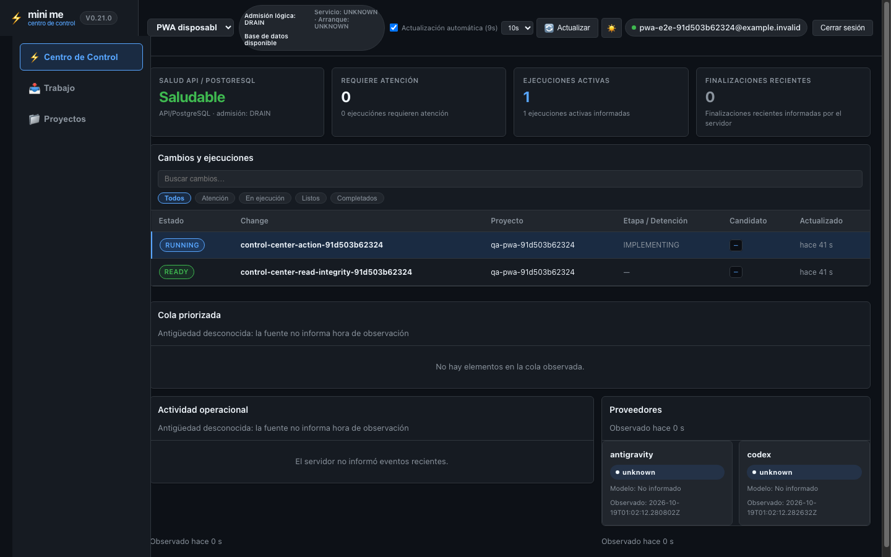
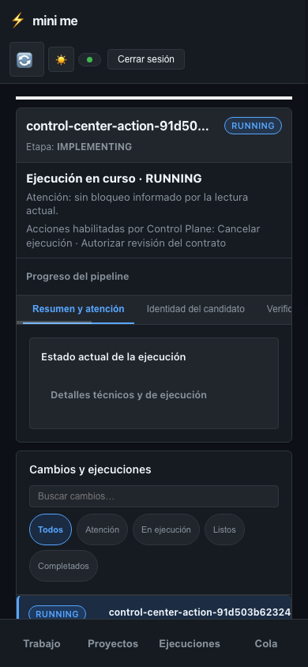
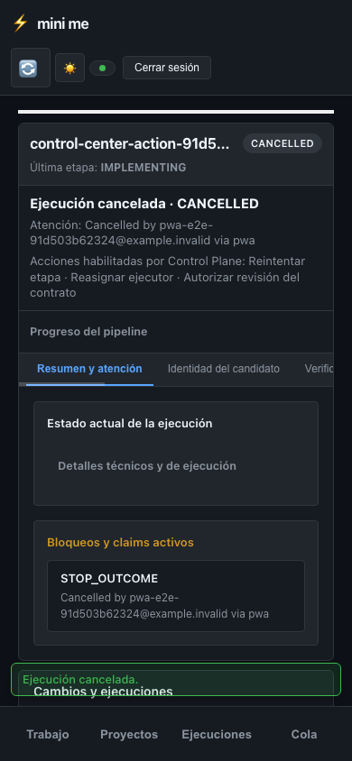

Desktop — encabezado y densidad operacional · 1440×900


Referencias Stitch aprobadas, sin cambios, junto a capturas Chrome del preview autenticado con PostgreSQL desechable. Datos QA, no observaciones de producción. La aceptación visual humana sigue pendiente.




La acción canónica quedó persistida como CANCELLED en PostgreSQL desechable. El toast muestra “Ejecución cancelada.”; identidad y motivo detallado permanecen en la vista/historial autorizados, no en la notificación.